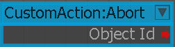
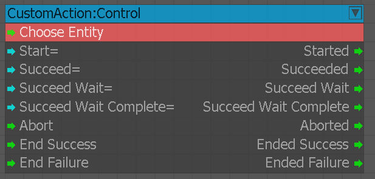
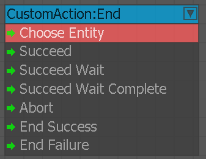
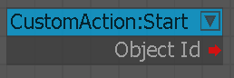
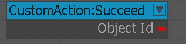
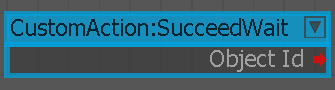
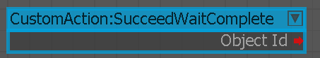

Прервать
Этот узел запускает путь отмены для специального действия.

Контроль
Узел используется для управления конкретным экземпляром специального действия.

Конец
Этот узел является конечной точкой для всех путей в дополнительном действии.

Старт
Этот узел является началом специального действия.

Успех
Этот узел является путем успешного выполнения специального действия.

SucceedWait
Этот узел представляет собой путь ожидания успеха для специального действия.

SucceedWaitComplete
Этот узел представляет собой путь успешного ожидания завершения настраиваемого действия.
